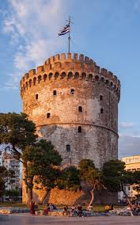
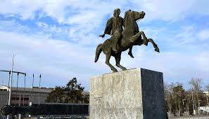
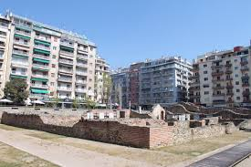
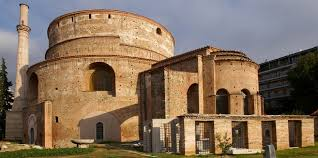

1.ΛΕΥΚΟΣ ΠΥΡΓΟΣ
Ο Λευκός Πύργος της Θεσσαλονίκης, είναι οχυρωματικό έργο οθωμανικής κατασκευής του 15ου αιώνα. Σήμερα θεωρείται χαρακτηριστικό μνημείο της Θεσσαλονίκης και είναι ό,τι έχει σωθεί από την κατεδαφισμένη οθωμανική οχύρωση της πόλης.
Η σημερινή μορφή του πύργου αντικατέστησε βυζαντινή οχύρωση του 12ου αιώνα για να χρησιμοποιηθεί στη συνέχεια ως κατάλυμα φρουράς Γενιτσάρων και ως φυλακή θανατοποινιτών. Σήμερα λειτουργεί ως μουσείο και είναι ένα από τα πιο γνωστά κτίσματα-σύμβολα πόλεων στην Ελλάδα.
Έχει 6 ορόφους, 34 μέτρα ύψος και 70 μέτρα περίμετρο.Ο Λευκός Πύργος έχει θέα την παραλία της Θεσσαλονίκης.
2.ΑΓΑΛΜΑ ΜΕΓΑΛΟΥ ΑΛΕΞΑΝΔΡΟΥ
Στην παραλία της Θεσσαλονίκης, δίπλα στον Λευκό Πύργο βρίσκεται το άγαλμα του Μεγάλου Αλεξάνδρου, Βασιλέα των Μακεδόνων. Αναπαριστάται να ιππεύει τον Βουκεφάλα, πολεμικό ίππο ο οποίος συνόδεψε για 20 χρόνια τον Μακεδόνα στρατηλάτη στις εκστρατείες του.
Ανεγέρθηκε το 1973 με δαπάνες από ερανικές επιτροπές και εγκαινιάστηκε το 1974.Το ύψος του αγάλματος είναι 6 μέτρα και έχει βάρος 4 τόνους.
Το συνολικό ύψος μαζί με το βάθρο ανέρχεται στα 11 μέτρα.
3.ΚΗΠΟΙ ΤΟΥ ΠΑΣΑ

Μια άποψη που υπάρχει αναφέρει ότι οι κήποι ονομάστηκαν έτσι καθώς υπήρξαν το ησυχαστήριο του Οθωμανού μεράρχου Σεϊφουλάχ Πασά.
4.ΑΨΙΔΑ ΤΟΥ ΓΑΛΕΡΙΟΥ
Χτίστηκε ως συγκρότημα ανακτόρων του Ρωμαίου αυτοκράτορα Γαλέριου κατά την περίοδο της Ρωμαϊκής «Τετραρχίας» (297-307 μ.Χ.)
5.ΡΟΤΟΝΤΑ
Η αρχική χρήση της δεν είναι γνωστή, αλλά διατυπώθηκαν ως τώρα διάφορες υποθέσεις: ότι υπήρξε ναός του Δία ή των Καβείρων, ότι κατασκευάστηκε από τον Καίσαρα Γαλέριο ως μαυσωλείο του ή ως αίθουσα του θρόνου στο ανακτορικό συγκρότημα.
Μετατράπηκε σε ναό την παλαιοχριστιανική περίοδο, τον οποίο κάποιοι ερευνητές ταυτίζουν με τον ναό των Ασωμάτων Δυνάμεων που αναφέρουν οι βυζαντινές πηγές.Το 1591 μετατράπηκε σε μουσουλμανικό τέμενος από τον σεΐχη Χορτατζί Σουλεϊμάν Εφέντη.
Μετά την απελευθέρωση της Θεσσαλονίκης το 1912, αφιερώθηκε στον Άγιο Γεώργιο.